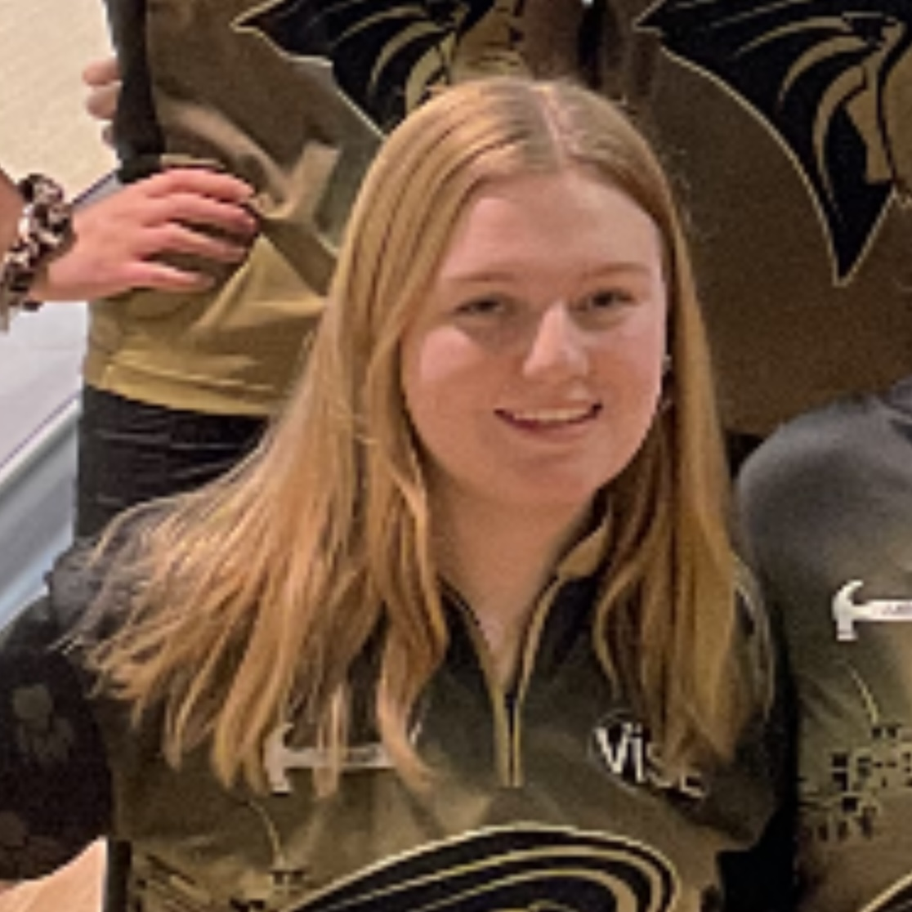
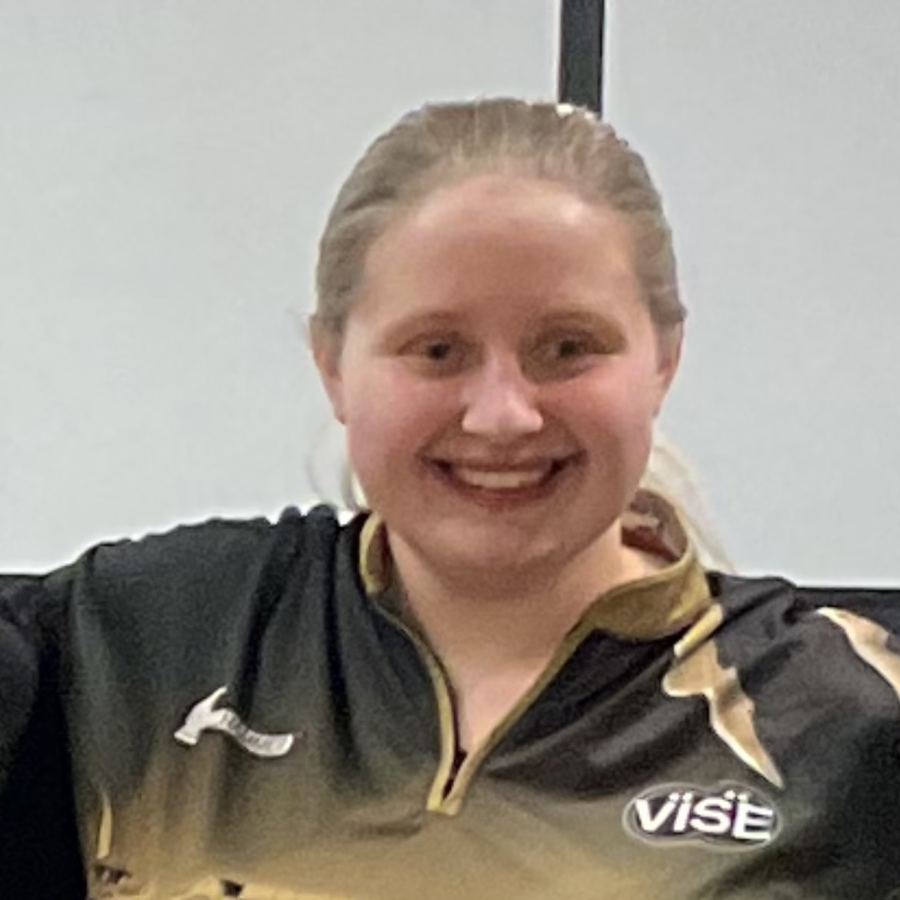
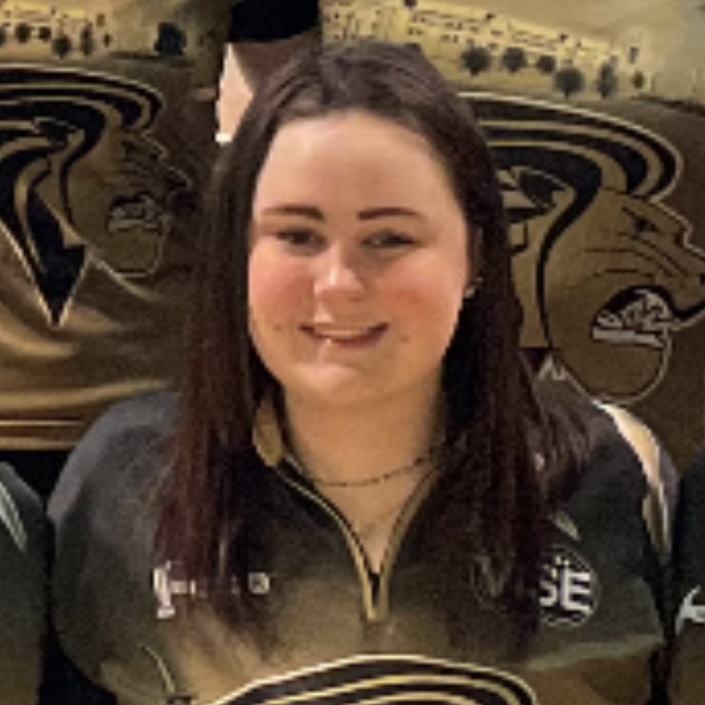

|  |
Sydney is a Junior majoring in IT with an emphasis in Applications Development. This is her third year participating on the women's bowling team. Originally, Sydney is from Wisconsin but her family currently resides in Memphis, TN. Back home, Sydney has a mixed terrier named Cody and a Chihuahua named Ruby. She also has two cats named Snickers and Bones. Sydney was diagnosed as Celiac 2 years ago which leads most of our house recipes to be gluten-free. Sydney's favorite food is chicken and alfredo! |
|  |
Maddie is a Junior majoring in Psychology. This is her second year participating on the women's bowling team. Originally, Maddie is from Tacoma,WA. After finishing her undergrad at Lindenwood, Maddie plans to pursue her masters. Her favorite food to make are muffins and her favorite snack is apples and peanut butter! Back home, she has a Pitbull named Patty. Maddie is the oldest sibling and has a younger brother. Outside of academics, Maddie spends her time working in retail and babysitting. |
|  |
Haley is a Junior majoring in Psychology. This is her second year participating on the women's bowling team. Originally, Haley is from St. Louis. Haley has 4 cats named Oliver, Ricky, Henry, and Earl, and a German Shepard named Oscar. Haley is the oldest of three with two younger brothers, Sam and Tom. Her favorite food is ravioli! Haley has worked at a local bowling alley for many years and acts as the snack bar manager. |